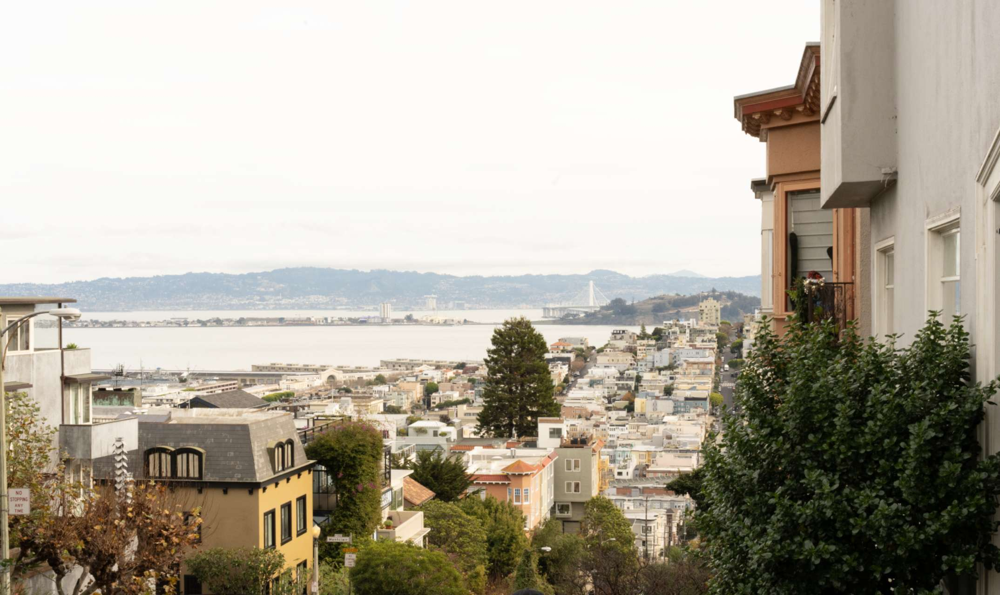
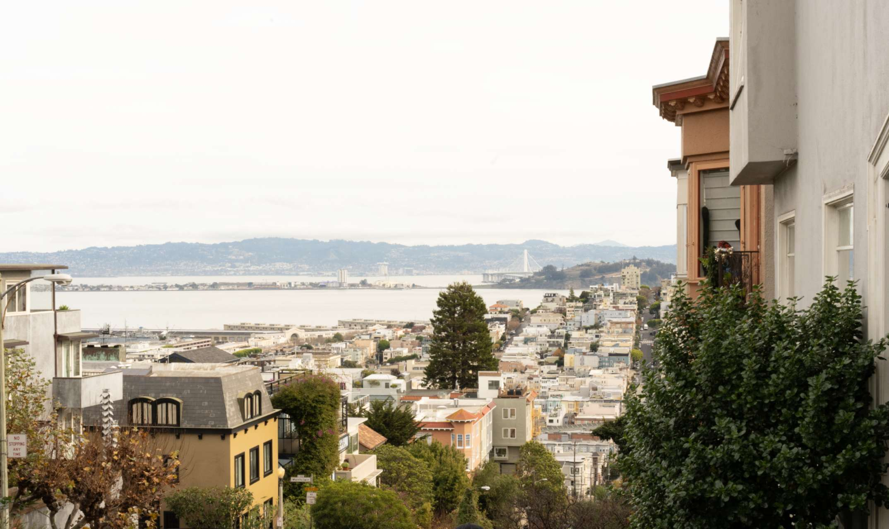
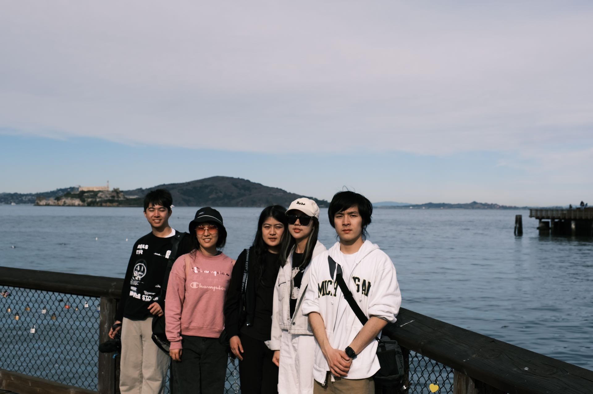
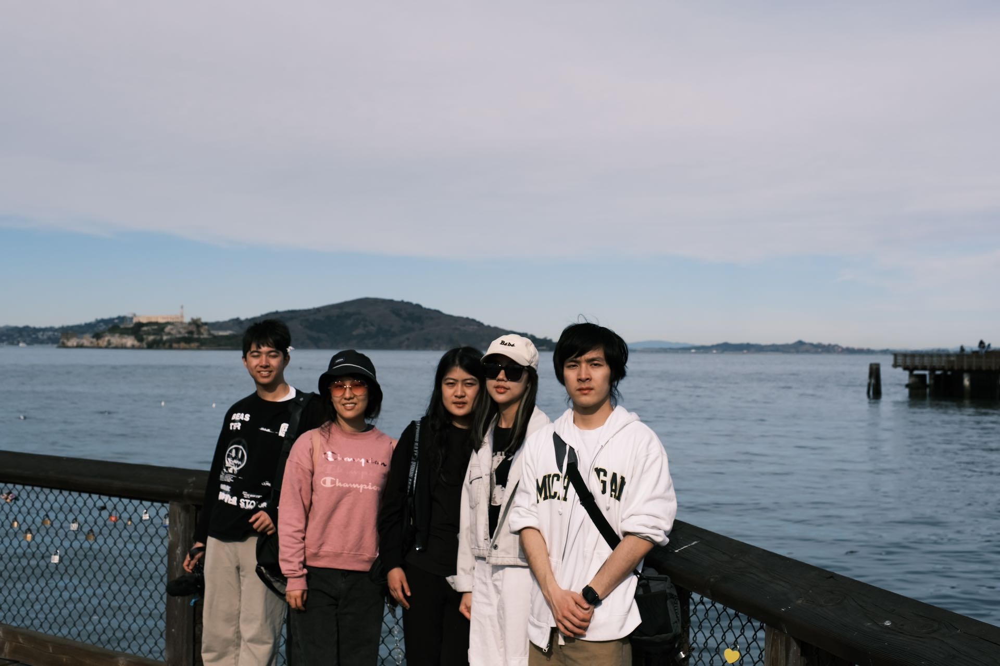

California, San Francisco, a name once heard and longed for by many, and at last, I have arrived! If you're going to San Francisco, be sure to wear some flowers in your hair.
"如果你还活着，旧金山不会使你厌倦；如果你已经死了，旧金山能让你起死回生。"终于，我有幸踏足了这片无数人梦中的土地。我眼中的旧金山是矛盾的。它精致优雅，有着淘金时代擦不去的痕迹，有着挤满港口的船只，繁华的街道，高耸的大楼，彰显着这座城市的繁华；它古老别致，充斥着旧时代气息的建筑和复古电车都折叠在城市现代化的空间里，像是见证着不曾走远的历史，留下一抹淡却无法消散的怀旧气息；它依偎山海，靠近码头的地方，总是伴随着安静的海浪声和翅膀的挥动声，偶尔飘散的海雾，暧昧而又浪漫。
有人说，旧金山能给所有人归属感，我无法赞同，但是必须承认的是，旧金山给所有人以浪漫。这里的每一处，无论是九曲花街，还是普通的市民楼阁，无论是渔人码头，还是寂静的海湾，都散发着慵懒的气息，淡却有着深入骨髓的浪漫。它像是快节奏社会里出逃的港湾，目之所及，每个人都是随意而专注的，走走停停。每个建筑都被阳光铺成做旧般的泛黄，像旧时胶卷，染上了时光的印记。
"如若有幸遇见晴天，你要在日落时分，和阳光、月亮、船只、人群和旧金山，一起奏响这把金色竖琴。"光是形容，便已觉金门大桥的魅力。而我又何其有幸，亲眼瞥见被夕阳染成半金色的金门大桥，无数电影画面与眼前的景象重合又分开，它和无数电影里一样恢弘而安静，印在每个人的眼眸中却又那么独一无二。
如果有机会，都去体验下在日落时分开车穿梭于山间吧，漫无边际橘黄色透过山林与树影，像是梵高打碎的颜料盘，柔和到给人一碰即碎的错觉。如果更有幸的话，请随意选一处转角停车吧，奔向日落之中，看着依偎的人影在夕阳里无限拉长，看着橘色的天空被更加深情的淡紫色慢慢吞噬，看着天际线最遥远处逐渐暗淡，你会晃神，仿佛黄昏只有一瞬，虽然围绕你的淡紫色会被黑暗侵蚀的一点不剩，但却留下了难以磨灭的温暖。这一刻我突然坚信，日落尤其温柔，人间皆是浪漫。


 



It was the first time I missed a flight, five people running through the airport but still missing the plane. But thanks to everyone, because no one complained at all. We calmly handled the change, relaxed around the whole airport. It was this mistake that gave us the opportunity to retrieve another camera and talk at the airport bar. Believe that all good things happen unexpectedly.
从未想过这次计划已久的加州之旅是以慌乱的误机作为序章。但是不得不提的是，三个人在安检前狂塞茶叶蛋，五个人在候机厅里提着大包小包狂奔，没赶上飞机却依旧能满脸笑容的和错过的飞机合影，是更为难得的体验。喜欢情绪稳定的大家，一起不慌不忙的改签，悠闲的逛遍整个机场，遗憾的是没能找到任何一家合口味的餐厅，却幸运的能在吉他声中，在吧台慢享候机时光（虽然没有21的我只能眼巴巴的望着）。但也正是这次误机，Alex有了时间返回wt取回之后承载着大半记忆的相机，当时还觉得荒谬，但是现在想来只觉得幸运，这个相机贯穿了我们的整场旅行。还记得最后离开加州那天，我也忍不住感叹，有时候错过会是更好的安排。
对这座城市留下的最深的印象，莫过于坐着叮叮车穿梭其中。其实作为工科生，最开始想象中的旧金山是繁华但是沉闷的。但是扑面而来的复古电车划破了我所有的想象，一瞬间甚至以为自己置身于80年代。电车的存在像是给整个街道按下了慢放键，哪怕是飞驰而过的汽车，都像是加了慢镜头，混杂着风声，竟生出自然的电影质感。电车的靠站点像是随机散落在每一个转角，直到被拉上车的那一刻，才敢确定站台的存在。我们一行人穿过人群来到电车的后部，任风在耳边呼啸，明明处于最宽敞的大街，又因着一路上的上坡，让极远处的风景都能尽收眼底，但是比起觉得广袤，我更多是看到了无数的时代缩影，古朴的气息甚至让道路显得狭窄起来。旧金山好像总能勾起人们对旧时代的遐想。
坐回车中，一个可爱的小男孩恰好在我们座位旁边。白皙的皮肤，金色的卷发，高挺的鼻梁，加上稚嫩的声音，是最典型最可爱的欧美孩童的形象。他的父亲坐在他的身旁，从头到尾宠溺的看着他好奇的张望，为他讲解着什么，甚至在车上拿出了一盒可爱的便当。水果蔬菜被切成小块后精致的摆放着，但是又被肉嘟嘟的小手搅乱，居然也不觉得脏乱，只觉得温馨，这大概是高颜值孩童永远的魅力吧。
渔人码头是这次旧金山之旅的尾声。不知道为什么，渔人码头四个字熟悉到给人一种每个城市都有属于自己的渔人码头的错觉。它看起来格外普通，甚至只是一个没有多少船只停留的码头，但却吸引了不少飞鸟盘旋和游客驻足。嘈杂的人流在我眼中破坏了自然的美感，让我甚至不能理解这里为什么会吸引到这么多人。但是当阳光倾落在一条一条木板路上时，当飞鸟振臂的声音夹杂着大海拍案的声音，虽然不够响但却足以盖过所有嘈杂的时候，我好像有了答案。但是在这里吃下了抵美之后人均最贵的一顿海鲜之后，答案又似乎模糊了起来...
 



At the end of our streets is sunrise;
At the end of our streets are spars;
At the end of our streets is sunset;
At the end of our streets the stars.
Ever the winds of morning
Are cool from the flashing sea
Flowing swift from our ocean,
Till the fog-dunes crumble and flee.
你可以不喜欢旧金山，但是你无法抗拒它的日落，和它充斥着的时代回音。